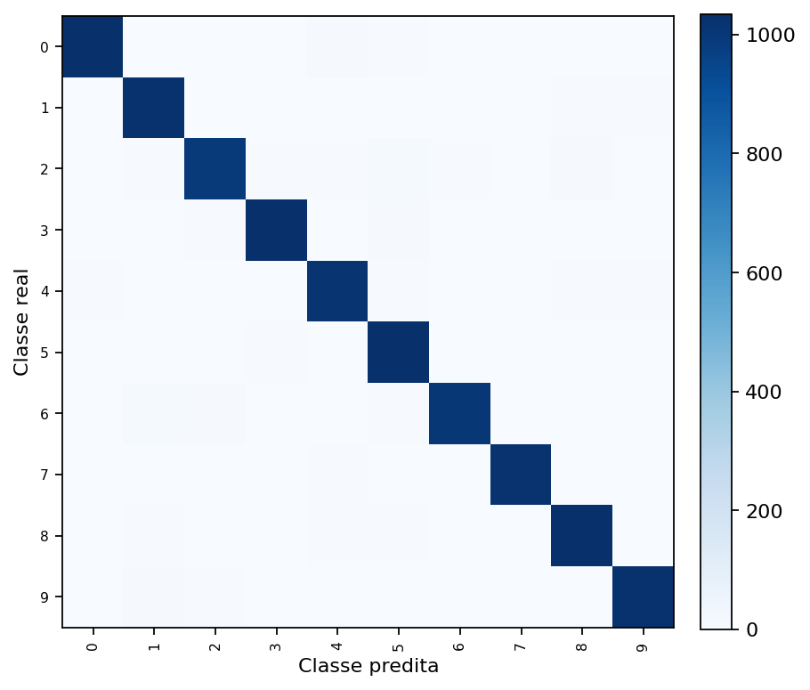
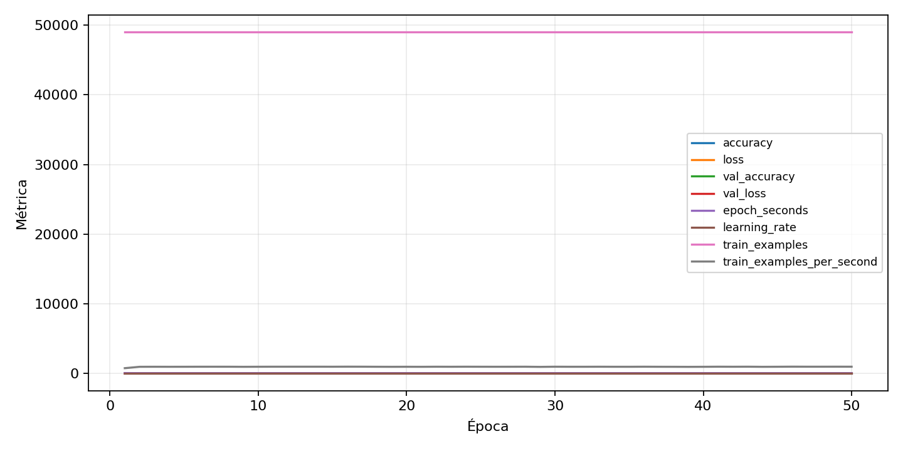

| n_samples | 10500 |
|---|---|
| loss | 0.13081295788288116 |
| accuracy | 0.9715238095238096 |
| balanced_accuracy | 0.9715238095238096 |
| macro_f1 | 0.9715187395186339 |


| Índice | Classe | Suporte | Precisão | Recall | F1 |
|---|---|---|---|---|---|
| 0 | 0 | 1050 | 0.982791586998088 | 0.979047619047619 | 0.9809160305343512 |
| 1 | 1 | 1050 | 0.9615384615384616 | 0.9761904761904762 | 0.9688090737240076 |
| 2 | 2 | 1050 | 0.969785575048733 | 0.9476190476190476 | 0.9585741811175338 |
| 3 | 3 | 1050 | 0.98 | 0.98 | 0.98 |
| 4 | 4 | 1050 | 0.9666030534351145 | 0.9647619047619047 | 0.9656816015252622 |
| 5 | 5 | 1050 | 0.9504132231404959 | 0.9857142857142858 | 0.967741935483871 |
| 6 | 6 | 1050 | 0.9776264591439688 | 0.9571428571428572 | 0.9672762271414822 |
| 7 | 7 | 1050 | 0.9826589595375722 | 0.9714285714285714 | 0.9770114942528735 |
| 8 | 8 | 1050 | 0.9661335841956726 | 0.9780952380952381 | 0.972077614765736 |
| 9 | 9 | 1050 | 0.9789674952198852 | 0.9752380952380952 | 0.9770992366412213 |
{"adapter":"kmnist","balance_mode":"all_raw","class_names":["0","1","2","3","4","5","6","7","8","9"],"dataset":"kmnist","dataset_options":{},"dataset_root":"/home/msduda/datasets-tcc/kmnist","native_channels":1,"normalization":"unit_interval","num_classes":10,"protocol":{"checkpoint_monitor":"val_macro_f1","dtype_policy":"mixed_float16","early_stopping":{"patience":50,"restore_best_weights":true},"evaluation_augmentation":false,"input_channels":"native","optimizer":"Adam","pretrained_weights":false,"reduce_lr_on_plateau":{"factor":0.3,"min_lr":1e-07,"patience":50},"resize":"proportional_padding","test_time_augmentation":false,"training_from_scratch":true},"seed":42,"source_fingerprint":"8928d478d8d23938a73b4f4a92c407bf3d74beff1e0e67e3644d6ecdc30cf828","source_manifest":{"class_names":["0","1","2","3","4","5","6","7","8","9"],"joined_samples":70000,"metadata":{"layout":"kmnist-component-npz"},"name":"kmnist","native_channels":1,"source_path":"/home/msduda/datasets-tcc/kmnist","splits":{"test":10000,"train":60000},"target_size":64},"target_size":64,"test_fraction":0.15,"train_fraction":0.7,"training":{"augmentation":{"brightness_delta":0.0,"contrast_lower":1.0,"contrast_upper":1.0,"cutout_max_frac":0.0,"cutout_prob":0.0,"flip_lr":false,"noise_std":0.0,"translate_frac":0.0,"zoom_max":1.0,"zoom_min":1.0},"batch_size":432,"default_image_size":64,"dtype_policy":"mixed_float16","early_stopping_patience":50,"extra_fraction":0.0,"image_size_overrides":{"gtsrb":128},"keras_verbose":1,"learning_rate":0.0003,"max_epochs":50,"preprocess_cache_max_mib":0,"reduce_lr_factor":0.3,"reduce_lr_min_lr":1e-07,"reduce_lr_patience":50,"shuffle_buffer_max_mib":0},"validation_fraction":0.15}
{"epochs_completed":50,"epochs_recorded":50,"evaluation_seconds":18.87061817599897,"fit_seconds_current_attempt":3024.147401135,"max_epoch_seconds":63.925349605997326,"max_epochs":50,"mean_epoch_seconds":50.73444640629997,"mean_train_examples_per_second":966.920909169849,"median_train_examples_per_second":970.4562996362095,"min_epoch_seconds":49.8064564410015,"selected_checkpoint":"/mnt/e/tcc-benchmark/outputs/kmnist-alldata-noaug-batch-sweep-2026-08-06/batch-432/kmnist/runs/kmnist__unit_interval__all_raw__seed-42/checkpoints/best.keras","total_seconds":2536.722320314999,"training_seconds":2536.722320314999,"wall_seconds_current_attempt":3046.681095453998}
{"elapsed_seconds":3046.7325726779964,"event_counts":{"data_preparation_end":1,"data_preparation_start":1,"epoch_end":50,"evaluation_end":1,"evaluation_start":1,"fit_end":1,"fit_start":1,"periodic":601,"run_completed":1,"train_start":1},"generated_at":"2026-08-08T06:52:56.169+00:00","gpu_backend":"pynvml","interval_seconds":5.0,"metrics":{"cpu_percent":{"count":659,"max":17.1,"mean":13.08588770864947,"min":0.0,"p50":13.4,"p95":16.3},"disk_data_free_bytes":{"count":659,"max":998270935040.0,"mean":998270865557.1715,"min":998270857216.0,"p50":998270865408.0,"p95":998270865408.0},"disk_data_percent":{"count":659,"max":2.7,"mean":2.7,"min":2.7,"p50":2.7,"p95":2.7},"disk_data_total_bytes":{"count":659,"max":1081101176832.0,"mean":1081101176832.0,"min":1081101176832.0,"p50":1081101176832.0,"p95":1081101176832.0},"disk_data_used_bytes":{"count":659,"max":27837964288.0,"mean":27837955946.82853,"min":27837886464.0,"p50":27837956096.0,"p95":27837956096.0},"disk_output_free_bytes":{"count":659,"max":207089766400.0,"mean":207076917428.24887,"min":207075905536.0,"p50":207076757504.0,"p95":207076999168.0},"disk_output_percent":{"count":659,"max":79.3,"mean":79.3,"min":79.3,"p50":79.3,"p95":79.3},"disk_output_total_bytes":{"count":659,"max":1000186310656.0,"mean":1000186310656.0,"min":1000186310656.0,"p50":1000186310656.0,"p95":1000186310656.0},"disk_output_used_bytes":{"count":659,"max":793110405120.0,"mean":793109393227.7511,"min":793096544256.0,"p50":793109553152.0,"p95":793110319104.0},"elapsed_seconds":{"count":659,"max":3046.674039,"mean":1527.0568550485584,"min":0.025321,"p50":1525.032457,"p95":2908.8015659},"gpu_count":{"count":659,"max":1.0,"mean":1.0,"min":1.0,"p50":1.0,"p95":1.0},"gpu_memory_percent":{"count":659,"max":52.16388702392578,"mean":51.750133178664626,"min":38.05222511291504,"p50":51.987648010253906,"p95":51.99909210205078},"gpu_memory_total_bytes":{"count":659,"max":8589934592.0,"mean":8589934592.0,"min":8589934592.0,"p50":8589934592.0,"p95":8589934592.0},"gpu_memory_used_bytes":{"count":659,"max":4480843776.0,"mean":4445302591.320182,"min":3268661248.0,"p50":4465704960.0,"p95":4466688000.0},"gpu_temperature_c":{"count":659,"max":51.0,"mean":42.03338391502276,"min":38.0,"p50":41.0,"p95":50.0},"gpu_utilization_percent":{"count":659,"max":100.0,"mean":21.31866464339909,"min":1.0,"p50":10.0,"p95":65.0},"process_cpu_percent":{"count":659,"max":218.4,"mean":170.72230652503794,"min":0.0,"p50":177.8,"p95":211.2},"process_read_bytes":{"count":659,"max":10969088.0,"mean":10944313.104704097,"min":7933952.0,"p50":10969088.0,"p95":10969088.0},"process_rss_bytes":{"count":659,"max":4141080576.0,"mean":3944984035.253414,"min":1030127616.0,"p50":4074577920.0,"p95":4123595161.6},"process_vms_bytes":{"count":659,"max":48909656064.0,"mean":48562024472.861916,"min":39580659712.0,"p50":48693284864.0,"p95":48842547200.0},"process_write_bytes":{"count":659,"max":1146880.0,"mean":1132646.55538695,"min":4096.0,"p50":1146880.0,"p95":1146880.0},"ram_available_bytes":{"count":659,"max":15529238528.0,"mean":12782932527.39302,"min":12587372544.0,"p50":12651749376.0,"p95":13529239961.6},"ram_percent":{"count":659,"max":24.3,"mean":23.082397572078907,"min":6.6,"p50":23.9,"p95":24.110000000000003},"ram_total_bytes":{"count":659,"max":16619085824.0,"mean":16619085824.0,"min":16619085824.0,"p50":16619085824.0,"p95":16619085824.0},"ram_used_bytes":{"count":659,"max":4031713280.0,"mean":3836153296.6069803,"min":1089847296.0,"p50":3967336448.0,"p95":4012565299.2000003}},"sample_count":659,"schema_version":1}